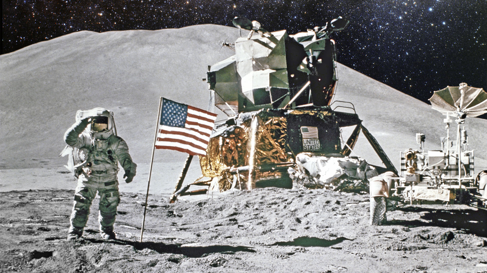
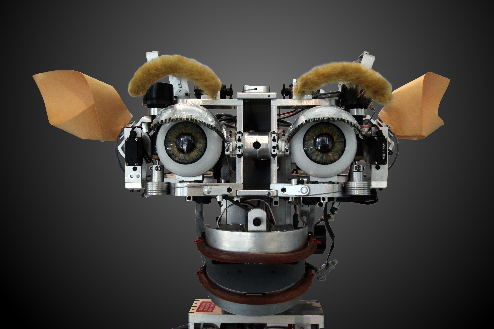

A Groundbreaking VR Moonwalk Experience
Imagine stepping onto the moon, feeling the crunch of lunar soil beneath your boots, and gazing out at the vast expanse of space. This isn’t science fiction; it’s the promise of a groundbreaking VR moonwalk experience called “Lunar Light: Discovery.” Danielle Roosa, the granddaughter of Apollo astronaut Stu Roosa, is the visionary behind this project. Her motivation is deeply personal—space exploration runs through her veins. She’s transforming her grandfather’s legacy into an immersive adventure that educates and inspires a new generation. Backed by the organization “Back to Space,” Danielle’s mission is clear: to blend history with cutting-edge technology.
VR Anywhere Door Experience
The Anywhere Door opens a portal to any location the user wishes to visit. Users can simply voice their desired destination or attach a photo of the place or creature they want to reach. The door then magically transports them there—whether it’s the moon, Antarctica, or even the sun!So, while we can’t step through pink doors yet, our fascination with teleportation persists. Maybe one day, humanity will unlock secrets that rival Doraemon’s gadgets.


Artificial Intelligence
Artificial intelligence (AI), in its broadest sense, is intelligence exhibited by machines, particularly computer systems. It is a field of research in computer science that develops and studies methods and software that enable machines to perceive their environment and use learning and intelligence to take actions that maximize their chances of achieving defined goals. Such machines may be called AIs.Artificial intelligence was founded as an academic discipline in 1956,[6] and the field went through multiple cycles of optimism,[7][8] followed by periods of disappointment and loss of funding, known as AI winter.Funding and interest vastly increased after 2012 when deep learning outperformed previous AI techniques.The widespread use of AI in the 21st century exposed several unintended consequences.
Quantum Computing
A quantum computer is a computer that exploits quantum mechanical phenomena. On small scales, physical matter exhibits properties of both particles and waves, and quantum computing leverages this behavior using specialized hardware. Classical physics cannot explain the operation of these quantum devices, and a scalable quantum computer could perform some calculations exponentially faster[a] than any modern "classical" computer. In particular, a large-scale quantum computer could break widely used encryption schemes and aid physicists in performing physical simulations; however, the current state of the art is largely experimental and impractical, with several obstacles to useful applications.
.jpg)

Robotics
Robotics is the interdisciplinary study and practice of the design, construction, operation, and use of robots. Within mechanical engineering, robotics is the design and construction of the physical structures of robots, while in computer science, robotics focuses on robotic automation algorithms. Other disciplines contributing to robotics include electrical, control, software, information, electronic, telecommunication, computer, mechatronic, and materials engineering.The goal of most robotics is to design machines that can help and assist humans. Many robots are built to do jobs that are hazardous to people, such as finding survivors in unstable ruins, and exploring space, mines and shipwrecks
Internet of Things
Internet of things (IoT) describes devices with sensors, processing ability, software and other technologies that connect and exchange data with other devices and systems over the Internet or other communication networks.[1][2][3][4][5] The Internet of things encompasses electronics, communication, and computer science engineering. "Internet of things" has been considered a misnomer because devices do not need to be connected to the public internet; they only need to be connected to a network[6] and be individually addressable. The field has evolved due to the convergence of multiple technologies, including ubiquitous computing, commodity sensors, and increasingly powerful embedded systems, as well as machine learning.